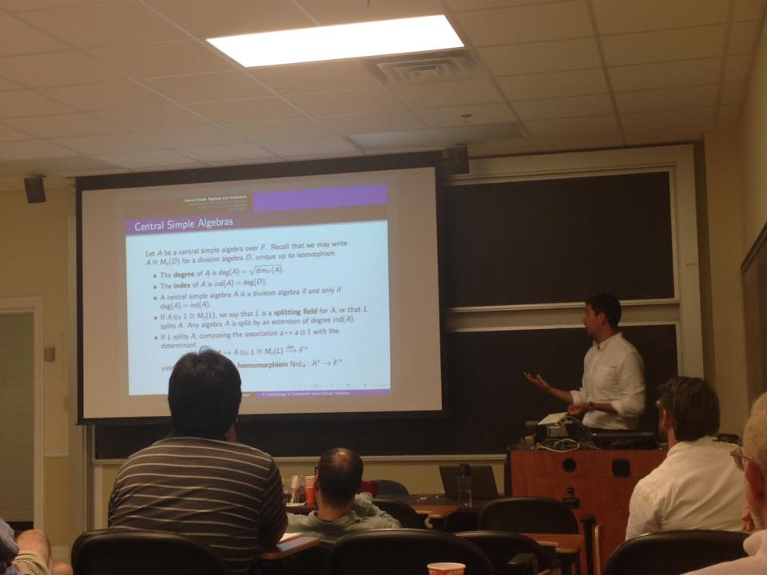

MOOSE (Moduli of Other Spaces Etc.) Seminar
In Spring 2015, Patricio Gallardo and Anna Kazanova organized a seminar within the algebraic geometry group at UGA. We have investigated questions concerning the moduli spaces $T_{d,n}$ of trees of projective spaces with marked points. These spaces were first defined and studied by Chen, Gibney, and Krashen (arXiv).
WebsiteTAGS (Tuesday Algebraic Geometry Student) Seminar
In Spring 2015, Natalie Hobson and Dan Mckenzie organized a student algebraic geometry seminar. The seminar took place Tuesday evenings along with a pizza dinner. Subject material covered a wide range of topics, and most talks were given by graduate students and postdocs.

LAAST (Late Afternoon Algebraic Structures Tea) Seminar
Since Fall 2011, Danny Krashen has been running a recurring informal seminar on algebraic structures and related topics. These have included algebraic cycles and applications to central simple algebras as well as homotopical methods in algebraic geometry.

Student Algebraic Geometry Seminar
In Fall 2012, Han-Bom Moon organized a student algebraic geometry seminar. Our main references were Miles Reid's "Young Person's Guide to Canonical Singularities," and Robert Lazarsfeld's "Positivity in Algebraic Geometry."
Website$\mathbb{A}^1$-Homotopy Seminar
During the Spring 2011 semester, Danny Krashen organized a seminar in $\mathbb{A}^1$-(or motivic) homotopy theory. Our main reference was "Motivic Homotopy Theory: Lectures at a Summer School in Nordfjordeid" by Dundas, Levine, Østvaer, Röndigs, and Voevodsky. Below is an incomplete set of notes from the seminar on categorical preliminaries.
NotesK-Theory Learning Seminar
In Spring 2011, Michael Ching, Joe Tenini and I organized a K-theory learning seminar at UGA. Below is a link to the notes for the seminar as well as a link to Chuck Weibel's K-Book, which was our main source of reference.
Notes K-Book